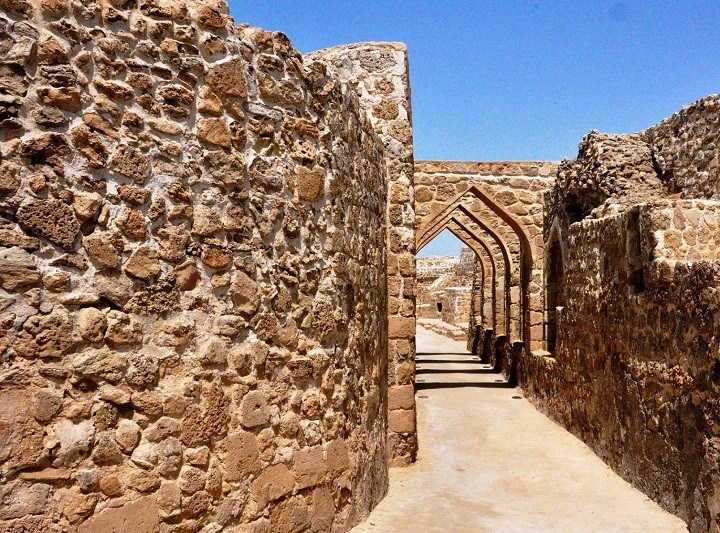
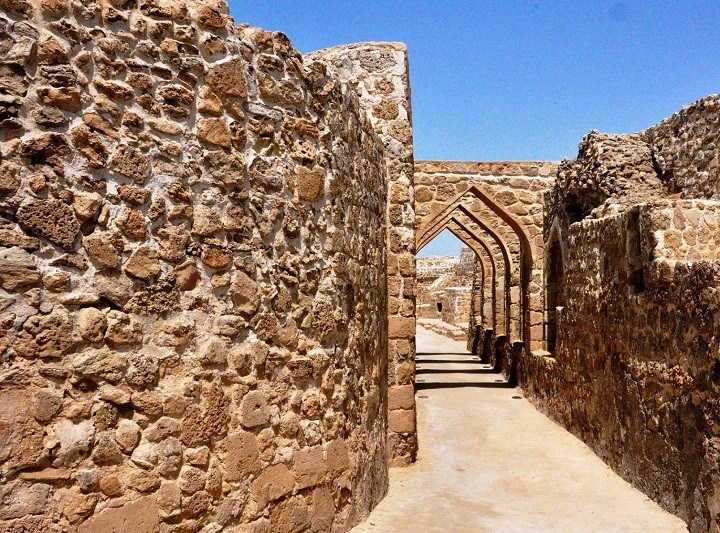
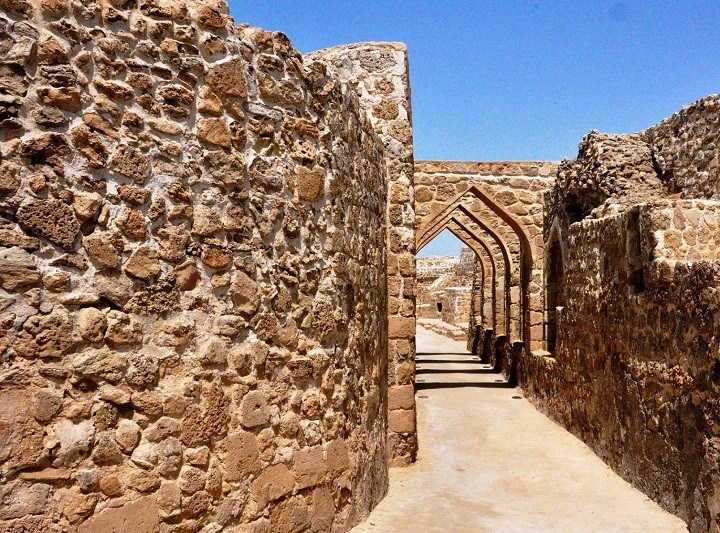

Qal`at al-Bahrain is a typical tell an artificial mound created by many successive layers of human occupation. The strata spreads over a 180,000 sq ft (16,723 m2) area, which encompasses the tell. This testifies to a continuous human presence from about 2300 BC to the 16th century AD. About 25% of the site has been excavated revealing structures of different types:residential, public, commercial, religious and military. They testify to the importance of the site as a trading port over the centuries. On the top of the 12-metre-high (39 ft) mound, there is the impressive Qal`at al-Burtughal (Portuguese fort), which gave the whole site its name, qal`a, meaning "fort". As the site was the capital of the Dilmun civilisation, it contains the richest remains of this civilization, which was hitherto only known from written Sumerian references.The site contains many areas and walls, including Saar necropolis, Al-Hajjar necropolis, Kassite Palace, Madimat Hermand necropolis, Madimat Isa necropolis, Al-Maqsha Necropolis, Palace of Uperi, Shakhura necropolis, and the Northern city wall.The ruins of the Copper Age consists of two sections of the fortification wall surrounding streets and houses, and a colossal building on the edge of the moat of the Portuguese fort in the centre.Barbar pottery has been unearthed around the walls of the central building, dating back to the same age as the Barbar Temples, although some of the other pottery and range of unearthed artefacts indicated that they predated the temples, dating back to 3000 BC or later.Relics of copper and ivory provide an insight into ancient trade links.Many vessels have been unearthed on the site, and Danish excavations of the Palace of Uperi area revealed "snake bowls", sarcophagi, seals and a mirror, among other things.
